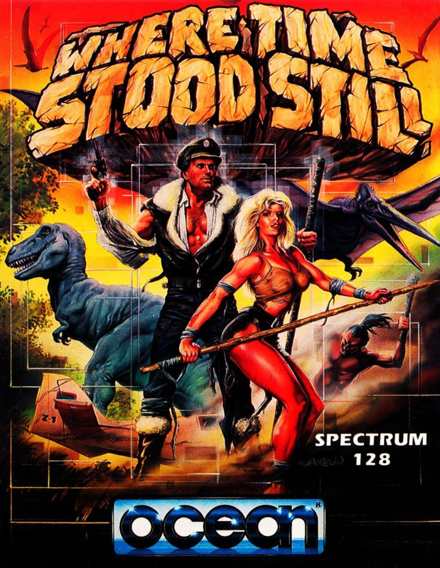
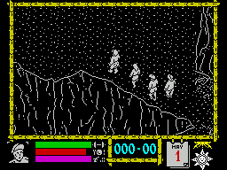
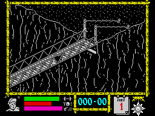
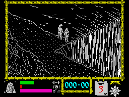

Where Time Stood Still


{kind=link}

| Publisher: | Ocean |
| Price: | £7.95 cassette, 14.95 disk |
| Year: | 1988 |
| Source: | CRASH, Issue 54 |

A plane crashlands high on a mysterious plateau. Miraculously, all three passengers (fat and wealthy Clive, his daughter Gloria and Dirk, her fiancé) manage to clamber out of the wreckage alive. As Jarret, professional pilot and guide, looks around, he realises that their journey has only just begun. Trapped in a world of falling rocks, dinosaurs, and hungry cannibals, they have no option but to try to reach safety on foot.

their quest for freedom
Taking the part of Jarret, you attempt to lead your companions away from the scene of the wreckage through a four-way scrolling, isometric perspective environment of swamps, precarious pathways, waterfalls and forests. Allowing Jarret or one of his companions to fall off a cliff, into water or through the rotten slats of a rickety bridge, results (unsurprisingly) in severe injury or death. Should Jarret die, the player chooses a new leader from the members of the party left alive.
The inhabitants of this strange and distant land prove a constant threat. Sea monsters flex their elastic tentacles, cannibals hurl spears and pterodactyls swoop in from above, ready to carry unwitting victims high into the prehistoric sky.
Helpful objects, ranging from gun to first aid kit, are scattered round the plateau. A menu system allows these to be picked up, used and moved around. Each of the characters has his or her own inventory and is capable of carrying up to four objects.

A series of status bars shows the company’s collective state of health in terms of strength, hunger/thirst and ammunition. As their stamina begins to drop, the characters, communicating through speech bubbles, begin to complain. Giving them supplies and an opportunity to rest, boosts energy. Allowing the health rating to fall to zero causes the party to die of exhaustion.
As the journey continues, a calendar shows the changing date and indicates the passage of day and night. How long the party survives depends on the success of its leader. If Jarret makes little progress, his companions become disillusioned and begin to wander off on their own, If he succeeds in navigating the treacherous plateau he and his companions might just make it back home.
CRITICISM

“Where Time Stood Still is an ingenious concept perfectly executed. The 3-D environment creates an eerie, otherworldly atmosphere intensified by the realistic treatment of the plateau’s natural hazards. Walk without care and you could be hurtling down the edge of the next precipice or sinking unexpectedly into the arms of a slithering, slimy squid. Each member of the expedition has his or her own clearly defined characteristics: little Gloria is far less delicate than she looks and fat Clive is always hungry. What makes this animated adventure so exciting is its element of unpredictability. You can take every possible precaution, but whether Dirk or Clive get carried away in the bony claws of a pterodactyl is still mostly a matter of luck. It’s a pity that there’s no save game option (a chance to behave totally recklessly without fear of the consequences) but I suppose in the quest to survive you only get one chance. Don’t just stand there — go out and buy!”
KATI ... 95%
“The first thing that strikes you about Where Time Stood Still is the detail in the 3-D landscape. This graphical quality is reminiscent of The Great Escape (also from Ocean). The scrolling is a bit sluggish at times but it’s not surprising considering the amount of detail on the screen. There’s a good in-game tune which becomes irritating after a while; fortunately it can be switched off in favour of sound effects. Where the game really scores highly is in the marvellous atmosphere it creates, totally absorbing the player in the action. The landscape is very large with many different features such as falling rocks, a swamp with a monster in it, and a waterfall. The various dinosaurs are well animated and quite scary when they suddenly appear to whisk off one of the characters. There are also some wonderful spear throwing natives and even a hand which pokes through a hole in the rocks to push you off the ledge. This is one of the most absorbing games ever — it’s a classic!”
PHIL ... 97%
“I haven’t enjoyed playing a game so much for ages. Where Time Stood Still is an instantly playable, 3-D adventure that will keep you glued to your TV screen for months to come. All the graphics are detailed and clear with excellent backgrounds and well designed characters. As you progress through the game you find surprises around every corner (some not very pleasing ones either!) which makes the game even more addictive. The dinosaurs that roam around the landscape add an element of excitement and the cannibals will soon get you running! The use of menus to pick up and drop objects is a good idea as it stops the screen being cluttered up with useless information, but which menu does what is a little confusing at first. Just to give you an idea of how big the game is, it takes up 120K of my +3 — and that’s big! If you buy Where Time Stood Still it will give you endless enjoyment for months to come.”
NICK ... 92%
COMMENTS
| Joysticks: | Cursor, Kempston, Sinclair |
| Graphics: | Isometric perspective landscape, with superb characters and animation |
| Sound: | A bearable tune burbles along which can be toggled for some atmospheric spot effects |
| Options: | Redefinable keys |
| General rating: | A thoroughly engrossing arcade adventure |
| Presentation: | 93% |
| Graphics: | 93% |
| Playability: | 95% |
| Addictive qualities: | 94% |
| Overall: | 94% |